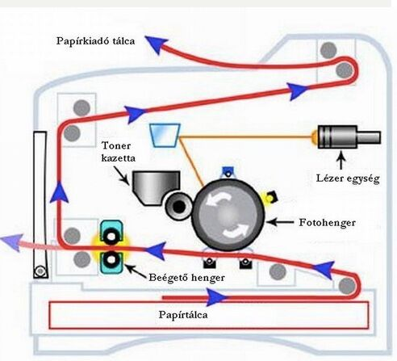
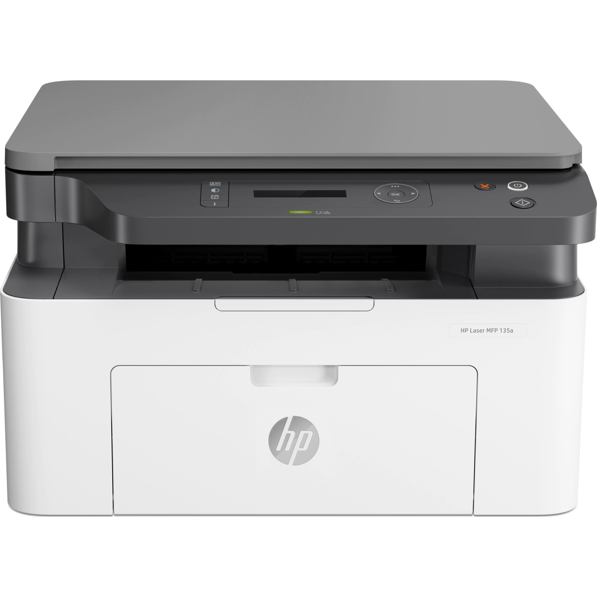

működése
Hasonló a fénymásolókéhoz.
Egyik fő alkotóeleme, a fényérzékeny szeléndob, melyet a készülék a dob lassú forgása alatt egy nagyfeszültségű vezeték (úgynevezett korona vezeték) segítségével pozitív töltéssel lát el.
Eközben egy kicsiny lézersugár a dob felszínének bizonyos részeire negatív töltésű képet rajzol. Ez a kép a nyomtatandó karakterek, vagy kép elektrosztatikus rajzolata. Amint ez a kép elkészül, a nyomtató a dob negatív töltéssel kisütött részeit pozitív töltésű festékkel vonja be.
A papír olyan negatív töltést kap az úgynevezett transzfer korona vezetéktől, ami erősebb a dob negatív töltésű részeinél, így az ott lévő feltékpontok a dobon végighaladó papírra tapadnak.
Ezt követően a papír egy forró hengerpáron halad keresztül, ami megolvasztja festéket, ami befolyik a papír rostjai közé, és ott megszilárdul.
Mindezek után egy leválasztó lapát megtisztítja a dobot a maradék festéktől.
A legfontosabb alkatrészei:
toner tartály, fotókonduktor, dobegység vagy fényhenger, továbbító henger, rögzítő henger, lézer egység, tükör.

előnyei
olcsó az üzemeltetése
pontosság és tartósság
sebesség
csendes
„szárazan” érkezik ki a papír a nyomtatóból (nem maszatolódik el a festék)
a tonerpor nem szárad be a tartályba, mint a tintasugaras nyomtatónál a tintapatron
hátányai
drága beszerzési ár, ha színes nyomtatásra is szükség van
a toner kazetta drága, de sokáig elég
a kedvezőbb áru lézernyomtatók csak fekete-fehérben nyomtatnak
általában a lézernyomtatók nem tudnak fénymásolni, szkennelni és faxolni, így ezen funkciókat másik készüléknek kell ellátnia
több áramot fogyaszt, mint egy tintasugaras nyomtató

fajtái
Multifunkciós lézernyomtató:
A multifunkciós lézernyomtatók ellátják a fénymásoló és a szkenner feladatát, emellett helyet takarítanak meg és olcsóbbak, mind a specializált eszközök külön-külön történő megvásárlása. Színes és monokromatikus (fekete-fehér) változatok is léteznek. A multifunkciós lézernyomtató alkalmas az irodába, iskolába, vállalatokhoz, de a háztartásba is, ahol többször kerül sor nyomtatásra.
Fekete-fehér lézernyomtató:
A fekete-fehér lézernyomtató ideális választás nagyobb mennyiségű szöveges dokumentum nyomtatása esetén. A tonerkazetták, vagy színezőanyagok olcsóbbak, és a nyomtatás rendkívül gyorsan végbemegy.
Színes lézernyomtató:
Működésük alapvetően a mono nyomtatókéval felel meg annyi különbséggel, hogy az azoknál ismertetett folyamatot négyszer, a négy alapszínnek megfelelően hajtják végre.
Ennek kivitelezésére több eljárás ismert.
Ugyanazon hengert használva a négy színt (CMYK) egymás után viszi fel olyan módon, hogy a papír a teljes utat négyszer teszi meg
Egy lemezre egy lépésben viszi fel a négy színt, onnan kerül a papírra
Minden színnek külön nyomtatóegysége van külön dobbal, külön lézerszerkezettel és festékrendszerrel, a papír minden dobfejen keresztülmegy (Ez a legdrágább megoldás)